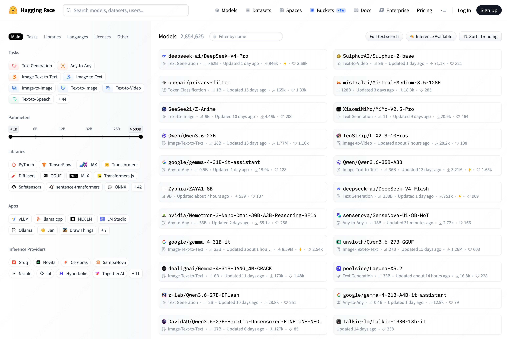

学习资源：
LLM 视频：
李沐 动手学深度学习PyTorch版
Deep Learning
FNN
Feedforward Neural Network，前馈神经网络，也是最简单的神经网络
模型结构如下图所示：

如果我们想要用它作为一个序列转导模型(Sequence Transduction Model)来解决序列转导问题，它是不合适的，原因有以下几点：
-
从输入层来看，它的输入是固定的，每输入一个token，就会直接产生一个结果，显然是不合适的，只能产生所谓的等长结果
-
完全丢弃了句子中词语的顺序信息
RNN
Recurrent Neural Network, 循环神经网络的出现就是为了解决 FNN 中出现的序列转导问题
首先我们来尝试改造之前的 FNN，来将输入句子中词语的信息也编码进模型里，那么很容易想到，我们可以将上一个时间步 $t - 1$ 计算得到的中间输出 $h_{t - 1}$ 也传递给下一个时间步 $t$。那么再下一个时间步 $t$ 计算时，就可以像人一样分析前面出现的词语了
我们来举例说明，如果我们的输入是"我爱水课"，那么计算过程如下：

也就是：
$h_t = f(W x_t + U h_{t - 1})$
$y_t = g(Vh_t)$
其中：
- $x_t$: $t$ 时间步的输入
- $h_t$: $t$ 时间步的隐藏状态
- $y_t$: $t$ 时间步的输出
- $W,U,V$: 权重矩阵
- $h_t$中的 $f$: 激活函数,如 ReLU, Sigmoid, 用于引入非线性
- $y_t$中的 $g$: 视任务而定，用来将输出转换为我们想要的结果
很好，但是现在还有一个问题尚未解决，输入和输出不等长的时候怎么办？
那么我们显然不能在每个时间步 $t$ 都固定进行一次输出，而应该将输入和输出分开来，也就是在所有输入都计算完成后，再统一进行输出。
这就是大名鼎鼎的 Encoder 和 Decoder 架构：

这里的 $C$ 就是所谓的“上下文向量”
现在我们来看 RNN 似乎已经够完美了，但是依旧还有三个问题困扰着人们：
- 我们来看隐藏状态 $h_1$，它在产生 $C$ 的时候已经被计算了好多次了，随着序列长度的增加，它所携带的信息素会被稀释的越来越少，这也就是我们经常说的模型在处理长序列时出现的“遗忘”问题。
- 对于每一个输出来说，不同时间步的隐藏状态 $h_i$ 对它来说意义显然不一样，比如“我爱水课”中的“水”，很明显对于“课”这个词应该非常关注，而不是现在这样笼统的进行同等对待的输入，而是应该类似于 $s_2=0.1h_1+0.1h_2+0.2h_3+0.6h_4$
- Encoder 和 Decoder 中都是串行化计算，无法并行，限制了模型进一步发展
对于上述问题，人们提出了 Attention Mechanism(注意力机制)：

比如对于“我爱水课”中的”水“，它明显对"课"这个字有更高的关注度，因此它的输入中对 $h_4$ 的关注度明显大于 $h_1$，$h_2$，因此我们可以让模型在训练中学习到 $C_2 = 0.1h_1+0.1h_2+0.3h_3+0.5h_4$。
这样对于距离它很远的词，它也可以通过给它一个很大的权重，来解决遗忘问题。
因此上面的问题1 和问题 2 的问题都解决了，现在只剩下一个问题了，那就是如何并行计算？
虽然也有很多人在使用 CNN 来改造 Encoder 来达到并行计算的目的，但是又重新带来了远距离遗忘问题，要想彻底解决这个问题，就得等到 2017 年 Transformer 的横空出世了
谷歌在 2017 年发表了一篇划时代的论文： Attention Is All You Need(论文原文以及翻译在这)
论文中提到了一种全新的模型：Transformer，它完全抛弃了 RNN 或者 CNN 的序列建模方式，完全基础自注意力机制，模型结构如下图所示：

直接看上面的图，肯定会两眼一黑，这画的都是个啥啊？？？
我们来慢慢分析，你就能理解为什么会这样设计了，以及怎么想到这么设计的？
首先我们来看看 RNN 还会有串行化的问题呢？就在于我们在解决 FNN 中句子中词语的位置信息问题时，采用了一种暴力方式，让当前时间步 $t$ 的输出依赖于上一个时间步 $t - 1$ 的隐藏状态 $h_{t - 1}$，而不是只依赖于当前输入 $x_t$。这种方法确实在一定意义上解决了位置信息的问题，但是后来又带来了远距离遗忘问题。
这时候我们会发现，能不能把这个输入的位置信息也硬编码进输入里面呢？这样我们就可以不用依赖上一个时间步的隐藏状态了，而同时计算每一个输入的输出了。恭喜你发明了 PE(Positional Encoding, 位置编码):
$$
\begin{align*}
PE_{(pos,2i)} &= \sin\left(\frac{pos}{10000^{\frac{2i}{d_{model}}}}\right) \\
PE_{(pos,2i+1)} &= \cos\left(\frac{pos}{10000^{\frac{2i}{d_{model}}}}\right)
\end{align*}
$$这种位置编码的好处涉及到傅立叶变换等相关知识，这里先不赘述了。以及中国的苏剑林老师提出了 RoPE（旋转位置编码），优化了 Transformer 论文中原版的位置编码，被 ChatGPT 等现在主流大模型直接采用。
有了上面的位置编码，我们就可以完全抛开之前 RNN 的循环结构了，转为设计一种更加优雅的自注意力机制，我们叫他缩放点积注意力(Scaled Dot-Product Attention)。
我们首先假设我们的输入是 $n$ 个 token 组成的序列 $x_1, x_2, ..., x_n$，每个 token 都会被 embedding 成一个 $d_{model}$ 维的向量，再和位置编码 PE 进行相加，得到最后的输入矩阵是 $X \in \mathbb{R}^{n \times d_{model}}$。模型在训练的时候，实际上就是在训练模型中的权重矩阵 $W_Q, W_K, W_V \in \mathbb{R}^{d_{model} \times d_k}$，这些权重矩阵会将我们的输入 $X$ 映射到 $d_k$ 维的空间中。
输入矩阵 $X \in \mathbb{R}^{n \times d_{model}}$，分别和 $W_Q, W_K, W_V \in \mathbb{R}^{d_{model} \times d_k}$ 相乘得到矩阵 $Q, K, V \in \mathbb{R}^{n \times d_k}$。
其中:
- $Q$：由查询向量 $\overrightarrow {Q_i}$ 组成的查询矩阵。通过使用一个查询投影矩阵 $W_Q$ 乘以嵌入向量 $\overrightarrow {E_i}$ 得到查询向量 $\overrightarrow {Q_i}$。
- $K$：由键向量 $\overrightarrow {K_i}$ 组成的键矩阵。通过使用一个键投影矩阵 $W_K$ 乘以嵌入向量 $\overrightarrow {E_i}$ 得到键向量 $\overrightarrow {K_i}$。
- $V$：由值向量 $\overrightarrow {V_i}$ 组成的值矩阵。通过使用一个值投影矩阵 $W_V$ 乘以嵌入向量 $\overrightarrow {E_i}$ 得到值向量 $\overrightarrow {V_i}$。
要想理解这里的矩阵 $Q, K, V$，我们先来举个例子来形象化的理解它们分别的作用：
假设有一个男生叫小帅，他想找对象，于是打开了交友软件。软件上有许多个女生 $b_1, b_2, b_3, \dots$ 也在寻找对象。小帅希望找出哪些女生最符合自己的要求，这样他就可以把更多注意力放在最合适的人身上。那么他可以这样做：

- 小帅首先需要发布自己的择偶标准，就是 Query($Q$);
- 每个人都需要在主页上标明自己符合哪些条件（包括小帅自己），这就是 Key($K$);
- 每个人还需要写清楚自己所有的的实际信息，这就是 Value($V$);
- 小帅用自己的要求 $Q$ 去和每个女生的 $K$ 做匹配，计算匹配程度（点积，即 $QK^T$），然后乘以缩放因子$\frac{1}{\sqrt{d_k}}$（这里是为了将点积后的结果变得更方便后续计算，实践中我们发现点积缩放后注意力速度更快、更节省空间），再用 Softmax 将匹配度归一化，得到注意力权重，这样就知道应该重点关注哪些女生；
- 注意力权重矩阵 $A' = \text{Softmax}(QK^T)$ 只是表示匹配程度，例如 $0.5, 0.2, 0.1 \dots$。但是仅有权重还不够，最终还需要获取具体信息，所以要用注意力权重去加权 Value ($V$)，得到最终的输出结果。
所以最终的缩放点积注意力机制计算可表示为：
$$
\text{Attention}(Q, K, V) = \text{softmax}\left(\frac{QK^T}{\sqrt{d_k}}\right)V
$$现在我们再来看看上面 Transformer 架构图上的 Encoder 部分：

这里的多头注意力模块是不是和我们上面设计的缩放点积注意力一样，所以图中部分有三个输入，分别对应去计算 $Q, K, V$。
论文中的编码器由 $N = 6$ 个相同的层堆栈组成，每一层有两个子层。第一个是多头自注意力机制，第二个是一个简单、位置感知的全连接前馈网络。在每个子层周围使用残差连接，然后进行层归一化。
Q. 那么多头注意力机制的“多头”到底体现在哪里呢？
A. 我们上面知道我们的输入矩阵 $X \in \mathbb{R}^{n \times d_{model}}$ ，而 $Q, K, V \in \mathbb{R}^{n \times d_k}$，最后的缩放点积注意力机制计算得到的结果 $\text{Attention}(Q, K, V) \in \mathbb{R}^{n \times d_k}$。但是为了方便计算，统一中间每一层的结果维度，我们会让每一层计算得到的结果和输入的维度一致，因此我们还需要将单个缩放点积注意力机制得到的结果进行一些处理，来得到和输入矩阵 $X$ 维度相同的输出结果。
最简单的方式就是使用和 $d_{model}$ 维度相同的矩阵 $W_Q, W_K, W_V$,即 $d_k = d_{model}$,也就是 $W_Q, W_K, W_V \in \mathbb{R}^{d_{model} \times d_{model}}$，这样我们的矩阵 $Q, K, V \in \mathbb{R}^{n \times d_{model}}$，最后计算得到的结果 $\text{Attention}(Q, K, V) \in \mathbb{R}^{n \times d_{model}}$。
但是实践发现，与其使用具有 $d_{model}$ 维的 $K, Q, V$ 的单个注意力函数，不如将它们线性投影 $h$ 次，分别映射到 $d_k, d_k, d_v$ 维，这样效果要好得多。
也就是 $Q, K \in \mathbb{R}^{n \times d_k}，V \in \mathbb{R}^{n \times d_v}$，最后计算得到的结果 $\text{Attention}(Q, K, V) \in \mathbb{R}^{n \times d_{v}}$，最后我们再将这 $h$ 个 $\mathbb{R}^{n \times d_{v}}$ 结果通过一个线性层进行升维，也就是投影到 $d_{model}$ 维，这样结果又变回了我们想要的 $\mathbb{R}^{n \times d_{model}}$。
多头注意力块展开也就是长成这样：

这里使用多个注意力头也很好理解，因为可以让每个注意力头，注意到不同的部分。还拿之前的例子来举例，一部分注意力头会更关注女生外表信息，比如身高，体重，气质等，另一个注意力头更关注女生的性格。这样在大数据训练下，模型的每一个注意力头可以更加专业，更加聚焦。
下面我们再来看看 Decoder 部分：

Decoder 部分和 RNN 很像，也是一种自回归生成 → 上一步输出的 token 作为下一步输入
-
推理阶段（生成）
-
我们要生成一句话：$y_1, y_2, …, y_n$
-
第一步输入：通常是一个 <BOS> token（句子开始符）
-
每一步生成的 $y_t$ → 作为下一步 Decoder 生成 $y_{t+1}$ 的输入
-
这里依旧是一个串行化计算，这个也符合人类，说话时一个字一个字的说
-
训练阶段
-
已知目标序列 $Y = [y_1, …, y_n]$ (也就是我们的训练数据)
-
Encoder输入：源语言序列 $X$（如英文）
-
Decoder输入：目标语言序列 $Y$ 左移一位（例如中文，左移一位 + <BOS>）
-
目标输出：目标语言序列 $Y$
-
假设训练文本是一个句子：$X =$ “我爱水课”, 那么 Encoder 中就是 “我爱水课”，Decoder 中就是 “<BOS>I love easy”，预期输出就是"I love easy courses"
这里的左移一位是为了让模型学习预测“下一个 token”
Masked Attention 保证每个位置只能看到自己和前面的 token，而不能偷看后面的答案(token)。本质上就是将之前计算得到的 $QK^T$ 矩阵加上一个下三角掩码矩阵（矩阵上三角注意力设置为负无穷大，其余都是0，这样那部分经过 Softmax 后就变成 0），该位置不会关注未来 token 的 Value
至于为什么 Decoder 需要 Masked Attention，而 Encoder 中不需要呢？这就在于两部分的分工是不一样的。
- Encoder 的任务是理解整个输入序列
- 每个 token 都可以参考序列中的所有 token，包括后面的 token
- 因此 Encoder 可以使用 完整的自注意力，不需要 Mask
- Decoder 的任务是自回归生成目标序列
- 预测下一个 token
- 只能依赖已生成的 token → 需要 Mask 保证未来信息不泄露
最后六层堆叠起来的样子是这样的：

现在我们再来回头看看 Transformer 架构是如何解决串行化问题的？
把 RNN 的串行递推彻底去掉，改用矩阵乘法一次性计算所有位置的注意力，这正是 $QK^T$ 矩阵乘法的意义。而不是每一个 token 并行计算，通过矩阵乘法就能自然的进行矩阵分块来实现并行计算。
附录
模型文件格式
本节我们来了解两个问题：
- HuggingFace 上开源的大模型是如何被实际使用的？
- 一个完整的模型仓库由哪些文件组成？
HuggingFace 可以理解为 LLM 界的 GitHub，是目前全球最大的开源模型社区，托管着数以百万计的模型：

下面以 2025 年 4 月开源的 DeepSeek-V4-Pro 为例，介绍模型仓库的典型文件结构。
仓库文件组成
一个标准的模型仓库通常包含以下几类文件：
|
文件 |
| 存储模型的神经网络权重（各层参数矩阵） |
model-*.safetensors
model.safetensors.index.json |
| 定义并解释模型结构（隐藏层维度、层数、注意力头等参数） |
config.json
configuration_xxx.py |
| 定义模型的计算逻辑与结构实现（Attention、MLP、Residual 等） |
modeling_xxx.py |
| 控制文本生成策略（如温度、top_p、最大长度等） |
generation_config.json |
| 把文字转成 token ID（词汇表与分词规则） |
tokenizer.json
tokenizer_config.json
assets/chat_template.jinja |
现代大模型本质上仍是神经网络，可以拆分为结构和权重两个部分，仓库中的文件也围绕这两部分展开。
完整的目录结构如下：
1
2
3
4
5
6
7
8
9
10
11
12
13
14
15
16
17
18
19
20
21
22
23
24
25
26
27
28
29
30
|
DeepSeek-V4-Pro/ (865 GB)
├── assets/ # 静态资源
│ └── dsv4_performance.png # 性能对比图（用于 README 展示）
├── encoding/ # 自定义分词器实现
│ ├── tests/ # 分词器单元测试
│ ├── README.md 8.12 kB # 分词器使用说明
│ ├── encoding_dsv4.py 27.9 kB # 核心分词逻辑（BPE/词表编解码）
│ └── test_encoding_dsv4.py # 分词器测试用例
├── inference/ # DeepSeek 官方自己写的推理代码
│ ├── README.md 951 B # 推理使用说明
│ ├── config.json 1.07 kB # 推理专用配置（并行策略、显存优化等）
│ ├── convert.py 7.08 kB # 权重格式转换工具
│ ├── generate.py 6.3 kB # 推理生成逻辑（采样策略、KV Cache 管理）
│ ├── kernel.py 22.2 kB # 底层算子（手写 Triton/CUDA kernel，MoE/MLA 专项优化）
│ ├── model.py 38.6 kB # 模型结构实现（不依赖 transformers，手写 Attention/MoE）
│ └── requirements.txt 92 B # 依赖库列表
├── .gitattributes 1.67 kB # Git LFS 大文件追踪配置
├── DeepSeek_V4.pdf 4.48 MB # 技术报告论文
├── LICENSE 1.08 kB # MIT 开源协议
├── README.md 13.2 kB # 项目说明文档
├── config.json 1.83 kB # 模型结构配置（层数、维度、专家数等）
├── generation_config.json 170 B # 生成参数默认值（temperature、top_p 等）
├── model-00001-of-00064.safetensors 1.85 GB # 模型权重分片 01（embedding 层，较小）
├── model-00002-of-00064.safetensors 13.9 GB # 模型权重分片 02
│ ... (省略中间分片)
├── model-00063-of-00064.safetensors 1.85 GB # 模型权重分片 63（较小）
├── model-00064-of-00064.safetensors 14.0 GB # 模型权重分片 64（含 lm_head）
├── model.safetensors.index.json 11.3 MB # 权重索引（记录每个参数在哪个分片的哪个位置）
├── tokenizer.json 6.37 MB # 词表 + 分词规则（BPE merge 规则等）
└── tokenizer_config.json 801 B # 分词器配置（特殊 token、chat template 等）
|
权重文件
模型权重被切分为 64 个 .safetensors 文件，切分方式为按参数顺序线性切割，基本等价于按层切。
那么推理框架如何知道某个权重具体在哪个文件中？这就由 model.safetensors.index.json 负责，它是一个索引文件，记录了每个参数名与对应权重文件的映射关系：
1
2
3
4
5
6
7
8
9
10
11
12
13
14
15
16
17
18
19
20
21
22
23
24
25
26
27
28
29
30
31
32
33
34
35
36
37
38
39
40
41
42
43
44
45
46
47
48
49
|
{
"metadata": {
"total_size": 864704792696
},
"weight_map": {
"embed.weight": "model-00001-of-00064.safetensors",
"layers.0.hc_attn_base": "model-00002-of-00064.safetensors",
"layers.0.hc_ffn_base": "model-00002-of-00064.safetensors",
"layers.0.hc_attn_fn": "model-00002-of-00064.safetensors",
"layers.0.hc_attn_scale": "model-00002-of-00064.safetensors",
"layers.0.hc_ffn_fn": "model-00002-of-00064.safetensors",
"layers.0.hc_ffn_scale": "model-00002-of-00064.safetensors",
"layers.0.attn.attn_sink": "model-00002-of-00064.safetensors",
"layers.0.attn.wq_a.weight": "model-00002-of-00064.safetensors",
"layers.0.attn.wq_a.scale": "model-00002-of-00064.safetensors",
"layers.0.attn.wq_b.weight": "model-00002-of-00064.safetensors",
"layers.0.attn.wq_b.scale": "model-00002-of-00064.safetensors",
"layers.0.attn.q_norm.weight": "model-00002-of-00064.safetensors",
"layers.0.attn.wo_a.weight": "model-00002-of-00064.safetensors",
...
...
...
"layers.0.ffn.gate.tid2eid": "model-00002-of-00064.safetensors",
"layers.0.ffn.gate.weight": "model-00002-of-00064.safetensors",
"layers.1.hc_attn_base": "model-00003-of-00064.safetensors",
"layers.1.hc_ffn_base": "model-00003-of-00064.safetensors",
"layers.1.hc_attn_fn": "model-00003-of-00064.safetensors",
"layers.1.hc_attn_scale": "model-00003-of-00064.safetensors",
"layers.1.hc_ffn_fn": "model-00003-of-00064.safetensors",
...
...
...
"layers.1.ffn.gate.tid2eid": "model-00003-of-00064.safetensors",
"layers.1.ffn.gate.weight": "model-00003-of-00064.safetensors",
"layers.2.hc_attn_base": "model-00004-of-00064.safetensors",
"layers.2.hc_ffn_base": "model-00004-of-00064.safetensors",
"layers.2.hc_attn_fn": "model-00004-of-00064.safetensors",
"layers.2.hc_attn_scale": "model-00004-of-00064.safetensors",
...
...
...
"mtp.0.e_proj.scale": "model-00064-of-00064.safetensors",
"mtp.0.h_proj.weight": "model-00064-of-00064.safetensors",
"mtp.0.h_proj.scale": "model-00064-of-00064.safetensors",
"mtp.0.enorm.weight": "model-00064-of-00064.safetensors",
"mtp.0.hnorm.weight": "model-00064-of-00064.safetensors",
"mtp.0.norm.weight": "model-00064-of-00064.safetensors"
}
}
|
定位到具体文件后，还需要知道权重在文件内的位置。safetensors 格式在文件头部内置了一个 JSON 索引，记录每个参数的精度、形状和字节偏移量，因此可以直接 seek 到对应位置读取，无需加载整个文件：
1
2
3
4
5
6
7
8
9
10
11
12
13
14
15
16
17
18
19
20
|
┌──────────────────────────────────────────┐
│ Header区（JSON格式，固定在文件开头） │
│ { │
│ "model.layers.3.mlp.w1": { │
│ "dtype": "F8_E4M3", │
│ "shape": [3072, 7168], │
│ "data_offsets": [0, 44040192] │ ← 字节偏移量！
│ }, │
│ "model.layers.3.mlp.w2": { │
│ "dtype": "F8_E4M3", │
│ "shape": [7168, 3072], │
│ "data_offsets": [44040192, 88080384]│
│ }, │
│ ... │
│ } │
├──────────────────────────────────────────┤
│ Data区（纯二进制，紧密排列） │
│ [weight_A 原始字节][weight_B 原始字节] │
│ [weight_C 原始字节]... │
└──────────────────────────────────────────┘
|
由于知道了每个权重的精确偏移量，推理框架可以通过 mmap 进行内存映射，实现近乎零拷贝的加载。
模型结构配置
config.json 负责描述模型的结构参数，指导推理框架构建计算图：
1
2
3
4
5
6
7
8
9
10
11
12
13
14
15
16
17
18
19
20
21
22
23
24
25
26
27
28
29
30
31
32
33
34
35
36
37
38
39
40
41
42
43
44
45
46
47
48
49
50
51
52
53
54
55
56
57
58
59
60
61
62
63
64
65
66
67
|
{
"architectures": [
"DeepseekV4ForCausalLM"
],
"attention_bias": false,
"attention_dropout": 0.0,
"bos_token_id": 0,
"eos_token_id": 1,
"expert_dtype": "fp4",
"hc_eps": 1e-06,
"hc_mult": 4,
"hc_sinkhorn_iters": 20,
"head_dim": 512,
"hidden_act": "silu",
"hidden_size": 7168,
"index_head_dim": 128,
"index_n_heads": 64,
"index_topk": 1024,
"initializer_range": 0.02,
"max_position_embeddings": 1048576,
"model_type": "deepseek_v4",
"moe_intermediate_size": 3072,
"n_routed_experts": 384,
"n_shared_experts": 1,
"norm_topk_prob": true,
"num_attention_heads": 128,
"num_experts_per_tok": 6,
"num_hidden_layers": 61,
"num_hash_layers": 3,
"num_key_value_heads": 1,
"num_nextn_predict_layers": 1,
"o_groups": 16,
"o_lora_rank": 1024,
"q_lora_rank": 1536,
"qk_rope_head_dim": 64,
"quantization_config": {
"activation_scheme": "dynamic",
"fmt": "e4m3",
"quant_method": "fp8",
"scale_fmt": "ue8m0",
"weight_block_size": [
128,
128
]
},
"rms_norm_eps": 1e-06,
"rope_scaling": {
"beta_fast": 32,
"beta_slow": 1,
"factor": 16,
"original_max_position_embeddings": 65536,
"type": "yarn"
},
"rope_theta": 10000,
"routed_scaling_factor": 2.5,
"scoring_func": "sqrtsoftplus",
"sliding_window": 128,
"swiglu_limit": 10.0,
"tie_word_embeddings": false,
"topk_method": "noaux_tc",
"torch_dtype": "bfloat16",
"transformers_version": "4.57.1",
"use_cache": true,
"vocab_size": 129280,
"compress_rope_theta": 160000,
"compress_ratios": [128, 128, 4, 128, 4, 128, 4, 128, 4, 128, 4, 128, 4, 128, 4, 128, 4, 128, 4, 128, 4, 128, 4, 128, 4, 128, 4, 128, 4, 128, 4, 128, 4, 128, 4, 128, 4, 128, 4, 128, 4, 128, 4, 128, 4, 128, 4, 128, 4, 128, 4, 128, 4, 128, 4, 128, 4, 128, 4, 128, 4, 0]
}
|
这些参数由 configuration_deepseek.py 解析为 Python 对象，再传递给模型构造函数。
你可能注意到，DeepSeek-V4-Pro 的仓库中并没有 configuration_deepseek.py 这个文件。这是因为 DeepSeek 系列已被 HuggingFace Transformers 库官方收录，相关实现直接内置在库中，无需随仓库分发。对于尚未被收录的新模型，仓库则必须提供该文件，用户加载时也需要显式设置 trust_remote_code=True。
虽然我们拿不到 V4 的这个文件，但是我们可以在 DeepSeek-V3 的仓库中找到之前版本的进行学习，其核心逻辑是将 config.json 中的参数解析为 DeepseekV3Config 对象：
1
2
3
4
5
6
7
8
9
10
11
12
13
14
15
16
17
18
19
20
21
22
23
24
25
26
27
28
29
30
31
32
33
34
35
36
37
38
39
40
41
42
43
44
45
46
47
48
49
50
51
52
53
54
55
56
57
58
59
60
61
62
63
64
65
66
67
68
69
70
71
72
73
74
75
76
77
78
79
80
81
82
83
84
85
86
87
88
89
90
91
92
93
94
95
96
97
98
99
100
101
102
103
104
105
106
107
108
109
110
111
112
113
114
115
116
117
118
119
120
121
122
123
124
125
126
127
128
129
130
131
132
133
134
135
136
137
138
139
140
141
142
143
144
145
146
147
148
149
150
151
152
153
154
155
156
157
158
159
160
161
162
163
164
165
166
167
168
169
170
171
172
173
174
175
176
177
178
179
180
181
182
183
184
185
186
187
188
189
190
191
192
193
|
from transformers.configuration_utils import PretrainedConfig
from transformers.utils import logging
logger = logging.get_logger(__name__)
DEEPSEEK_PRETRAINED_CONFIG_ARCHIVE_MAP = {}
class DeepseekV3Config(PretrainedConfig):
r"""
This is the configuration class to store the configuration of a [`DeepseekV3Model`]. It is used to instantiate an DeepSeek
model according to the specified arguments, defining the model architecture. Instantiating a configuration with the
defaults will yield a similar configuration to that of the DeepSeek-V3.
Configuration objects inherit from [`PretrainedConfig`] and can be used to control the model outputs. Read the
documentation from [`PretrainedConfig`] for more information.
Args:
vocab_size (`int`, *optional*, defaults to 129280):
Vocabulary size of the Deep model. Defines the number of different tokens that can be represented by the
`inputs_ids` passed when calling [`DeepseekV3Model`]
hidden_size (`int`, *optional*, defaults to 4096):
Dimension of the hidden representations.
intermediate_size (`int`, *optional*, defaults to 11008):
Dimension of the MLP representations.
moe_intermediate_size (`int`, *optional*, defaults to 1407):
Dimension of the MoE representations.
num_hidden_layers (`int`, *optional*, defaults to 32):
Number of hidden layers in the Transformer decoder.
num_nextn_predict_layers (`int`, *optional*, defaults to 1):
Number of nextn predict layers in the DeepSeekV3 Model.
num_attention_heads (`int`, *optional*, defaults to 32):
Number of attention heads for each attention layer in the Transformer decoder.
n_shared_experts (`int`, *optional*, defaults to None):
Number of shared experts, None means dense model.
n_routed_experts (`int`, *optional*, defaults to None):
Number of routed experts, None means dense model.
routed_scaling_factor (`float`, *optional*, defaults to 1.0):
Scaling factor or routed experts.
topk_method (`str`, *optional*, defaults to `gready`):
Topk method used in routed gate.
n_group (`int`, *optional*, defaults to None):
Number of groups for routed experts.
topk_group (`int`, *optional*, defaults to None):
Number of selected groups for each token(for each token, ensuring the selected experts is only within `topk_group` groups).
num_experts_per_tok (`int`, *optional*, defaults to None):
Number of selected experts, None means dense model.
moe_layer_freq (`int`, *optional*, defaults to 1):
The frequency of the MoE layer: one expert layer for every `moe_layer_freq - 1` dense layers.
first_k_dense_replace (`int`, *optional*, defaults to 0):
Number of dense layers in shallow layers(embed->dense->dense->...->dense->moe->moe...->lm_head).
\--k dense layers--/
norm_topk_prob (`bool`, *optional*, defaults to False):
Whether to normalize the weights of the routed experts.
scoring_func (`str`, *optional*, defaults to 'softmax'):
Method of computing expert weights.
aux_loss_alpha (`float`, *optional*, defaults to 0.001):
Auxiliary loss weight coefficient.
seq_aux = (`bool`, *optional*, defaults to True):
Whether to compute the auxiliary loss for each individual sample.
num_key_value_heads (`int`, *optional*):
This is the number of key_value heads that should be used to implement Grouped Query Attention. If
`num_key_value_heads=num_attention_heads`, the model will use Multi Head Attention (MHA), if
`num_key_value_heads=1 the model will use Multi Query Attention (MQA) otherwise GQA is used. When
converting a multi-head checkpoint to a GQA checkpoint, each group key and value head should be constructed
by meanpooling all the original heads within that group. For more details checkout [this
paper](https://arxiv.org/pdf/2305.13245.pdf). If it is not specified, will default to
`num_attention_heads`.
hidden_act (`str` or `function`, *optional*, defaults to `"silu"`):
The non-linear activation function (function or string) in the decoder.
max_position_embeddings (`int`, *optional*, defaults to 2048):
The maximum sequence length that this model might ever be used with.
initializer_range (`float`, *optional*, defaults to 0.02):
The standard deviation of the truncated_normal_initializer for initializing all weight matrices.
rms_norm_eps (`float`, *optional*, defaults to 1e-06):
The epsilon used by the rms normalization layers.
use_cache (`bool`, *optional*, defaults to `True`):
Whether or not the model should return the last key/values attentions (not used by all models). Only
relevant if `config.is_decoder=True`.
pad_token_id (`int`, *optional*):
Padding token id.
bos_token_id (`int`, *optional*, defaults to 1):
Beginning of stream token id.
eos_token_id (`int`, *optional*, defaults to 2):
End of stream token id.
tie_word_embeddings (`bool`, *optional*, defaults to `False`):
Whether to tie weight embeddings
rope_theta (`float`, *optional*, defaults to 10000.0):
The base period of the RoPE embeddings.
rope_scaling (`Dict`, *optional*):
Dictionary containing the scaling configuration for the RoPE embeddings. Currently supports two scaling
strategies: linear and dynamic. Their scaling factor must be a float greater than 1. The expected format is
`{"type": strategy name, "factor": scaling factor}`. When using this flag, don't update
`max_position_embeddings` to the expected new maximum.
attention_bias (`bool`, defaults to `False`, *optional*, defaults to `False`):
Whether to use a bias in the query, key, value and output projection layers during self-attention.
attention_dropout (`float`, *optional*, defaults to 0.0):
The dropout ratio for the attention probabilities.
```python
>>> from transformers import DeepseekV3Model, DeepseekV3Config
>>> # Initializing a Deepseek-V3 style configuration
>>> configuration = DeepseekV3Config()
>>> # Accessing the model configuration
>>> configuration = model.config
```"""
model_type = "deepseek_v3"
keys_to_ignore_at_inference = ["past_key_values"]
def __init__(
self,
vocab_size=129280,
hidden_size=7168,
intermediate_size=18432,
moe_intermediate_size = 2048,
num_hidden_layers=61,
num_nextn_predict_layers=1,
num_attention_heads=128,
num_key_value_heads=128,
n_shared_experts = 1,
n_routed_experts = 256,
ep_size = 1,
routed_scaling_factor = 2.5,
kv_lora_rank = 512,
q_lora_rank = 1536,
qk_rope_head_dim = 64,
v_head_dim = 128,
qk_nope_head_dim = 128,
topk_method = 'noaux_tc',
n_group = 8,
topk_group = 4,
num_experts_per_tok = 8,
moe_layer_freq = 1,
first_k_dense_replace = 3,
norm_topk_prob = True,
scoring_func = 'sigmoid',
hidden_act="silu",
max_position_embeddings=4096,
initializer_range=0.02,
rms_norm_eps=1e-6,
use_cache=True,
pad_token_id=None,
bos_token_id=0,
eos_token_id=1,
tie_word_embeddings=False,
rope_theta=10000.0,
rope_scaling=None,
attention_bias=False,
attention_dropout=0.0,
**kwargs,
):
self.vocab_size = vocab_size
self.max_position_embeddings = max_position_embeddings
self.hidden_size = hidden_size
self.intermediate_size = intermediate_size
self.moe_intermediate_size = moe_intermediate_size
self.num_hidden_layers = num_hidden_layers
self.num_nextn_predict_layers = num_nextn_predict_layers
self.num_attention_heads = num_attention_heads
self.n_shared_experts = n_shared_experts
self.n_routed_experts = n_routed_experts
self.ep_size = ep_size
self.routed_scaling_factor = routed_scaling_factor
self.kv_lora_rank = kv_lora_rank
self.q_lora_rank = q_lora_rank
self.qk_rope_head_dim = qk_rope_head_dim
self.v_head_dim = v_head_dim
self.qk_nope_head_dim = qk_nope_head_dim
self.topk_method = topk_method
self.n_group = n_group
self.topk_group = topk_group
self.num_experts_per_tok = num_experts_per_tok
self.moe_layer_freq = moe_layer_freq
self.first_k_dense_replace = first_k_dense_replace
self.norm_topk_prob = norm_topk_prob
self.scoring_func = scoring_func
# for backward compatibility
if num_key_value_heads is None:
num_key_value_heads = num_attention_heads
self.num_key_value_heads = num_key_value_heads
self.hidden_act = hidden_act
self.initializer_range = initializer_range
self.rms_norm_eps = rms_norm_eps
self.use_cache = use_cache
self.rope_theta = rope_theta
self.rope_scaling = rope_scaling
self.attention_bias = attention_bias
self.attention_dropout = attention_dropout
super().__init__(
pad_token_id=pad_token_id,
bos_token_id=bos_token_id,
eos_token_id=eos_token_id,
tie_word_embeddings=tie_word_embeddings,
**kwargs,
)
|
DeepseekV3Config 对象随后被传入 modeling_deepseek.py 中定义的模型构造函数，完成计算图的搭建和权重的加载。
模型计算图
modeling_deepseek.py 是模型的"施工图"，定义了模型前向计算的每一个步骤。它接收 DeepseekV3Config 对象，按照其中的参数搭建完整的计算图。
整个模型由三个层次嵌套组成：最外层的 CausalLM、中间的 Model 主体、以及逐层堆叠的 DecoderLayer。
第一层：DeepseekV3ForCausalLM（最外层）
这是对外暴露的完整模型类，包含两部分：负责特征提取的 DeepseekV3Model 主体，以及最后将隐状态映射回词表空间的 lm_head 线性层（维度为 hidden_size → vocab_size，即 7168 → 129280）。每次推理的最终输出是一个长度为 129280 的概率分布，对应词表中每个 token 被选为下一个词的概率。
第二层：DeepseekV3Model（主体）
主体由三部分串联而成：
- Embedding 层：将输入的 token ID 序列查表转换为高维向量，每个 token 变成一个 7168 维的浮点向量
- 61 层 DecoderLayer：核心计算模块，逐层对向量序列进行变换，层数来自
config.json 中的 num_hidden_layers
- RMSNorm 归一化：对最后一层的输出做归一化，再交给
lm_head 预测
第三层：DeepseekV3DecoderLayer（每一层的内部结构）
每一层包含两个子模块，计算时都采用残差连接（即将输入与输出相加后再往下传），以防止深层网络的梯度消失：
- MLA Attention（注意力模块）：DeepSeek 自研的 Multi-head Latent Attention，通过低秩压缩大幅降低 KV Cache 的显存占用
- FFN 前馈网络：分为两种，由
config.json 中是否配置了 n_routed_experts 决定——有则使用 MoE 层，否则使用普通的 Dense MLP 层
MoE 层的专家路由机制
DeepSeek-V3 共有 384 个路由专家和 1 个共享专家。每次前向计算时，门控网络（Gate）会对当前输入打分，动态选出得分最高的 6 个专家参与计算，其余 378 个专家的权重虽然存在显存中，但本次不参与运算。共享专家则每次必然激活，负责处理所有 token 的通用特征。最终输出是 6 个路由专家的加权求和，再叠加共享专家的输出。
这也是 MoE 架构的核心优势：总参数量大（1.6T），但每次实际计算量只相当于一个 49B 的稠密模型。
整个前向计算流程总结如下：
1
2
3
4
5
6
7
8
9
10
11
12
|
input_ids（token ID 序列）
↓ embed_tokens
Embedding 向量 [seq_len, 7168]
↓ × 61 层 DecoderLayer
├── MLA Attention（含残差）
└── MoE FFN（含残差，384专家选6）
最终隐状态 [seq_len, 7168]
↓ RMSNorm
↓ lm_head
logits [seq_len, 129280]
↓ softmax + 采样
下一个 token
|
注意看 DeepSeek-v4-pro 仓库还提供了 inference/，是 DeepSeek 为了极致性能自己实现的一套推理栈，需要单独按照 inference/README.md 的说明来启动。
分词器
每个模型都有自己的分词规则。tokenizer.json 是词表文件，负责完成文字 → token ID 的映射：
1
2
3
4
5
6
7
8
9
10
11
12
13
14
15
16
17
18
19
20
21
22
23
24
25
26
27
28
29
30
31
32
33
34
35
36
37
38
39
40
41
42
43
44
45
46
47
48
49
50
51
52
53
54
55
56
57
58
59
60
61
62
63
64
65
66
67
68
69
70
71
72
73
74
75
76
77
78
79
80
81
82
83
84
85
86
87
|
{
"version": "1.0",
"truncation": null,
"padding": null,
"added_tokens": [
{
"id": 0,
"content": "<｜begin▁of▁sentence｜>",
"single_word": false,
"lstrip": false,
"rstrip": false,
"normalized": false,
"special": true
},
{
"id": 1,
"content": "<｜end▁of▁sentence｜>",
"single_word": false,
"lstrip": false,
"rstrip": false,
"normalized": false,
"special": true
},
...
...
]
"model": {
"type": "BPE",
"dropout": null,
"unk_token": null,
"continuing_subword_prefix": null,
"end_of_word_suffix": null,
"fuse_unk": false,
"byte_fallback": false,
"vocab": {
"<｜begin▁of▁sentence｜>": 0,
"<｜end▁of▁sentence｜>": 1,
"<｜▁pad▁｜>": 2,
"!": 3,
"\"": 4,
"#": 5,
"$": 6,
"%": 7,
"&": 8,
"'": 9,
"(": 10,
")": 11,
"*": 12,
"+": 13,
",": 14,
"-": 15,
".": 16,
"/": 17,
"0": 18,
"1": 19,
"2": 20,
"3": 21,
"4": 22,
"5": 23,
"6": 24,
"7": 25,
"8": 26,
"9": 27,
":": 28,
";": 29,
"<": 30,
"=": 31,
">": 32,
"?": 33,
"@": 34,
"A": 35,
"B": 36,
"C": 37,
"D": 38,
"E": 39,
"F": 40,
"G": 41,
"H": 42,
"I": 43,
"J": 44,
"K": 45,
"L": 46,
"M": 47,
"N": 48,
"O": 49,
...
...
|
而 token ID → 语义向量的映射则由模型的 Embedding 层完成，对应的权重矩阵（shape 为 [vocab_size, hidden_size] = [129280, 7168]）存储在第一个权重分片 model-00001-of-00064.safetensors 中。
1
2
3
|
原始文字 → token ID → Embedding 向量 → 进入 Transformer 各层
tokenizer.json embed_tokens.weight
（词表查找） （矩阵取行）
|
tokenizer_config.json 则定义了分词器的元配置，包括特殊 token、编解码方式等：
1
2
3
4
5
6
7
8
9
10
11
12
13
14
15
16
17
18
19
20
21
22
23
24
25
26
27
28
29
30
31
32
33
34
|
{
"add_bos_token": false,
"add_eos_token": false,
"bos_token": {
"__type": "AddedToken",
"content": "<｜begin▁of▁sentence｜>",
"lstrip": false,
"normalized": true,
"rstrip": false,
"single_word": false
},
"clean_up_tokenization_spaces": false,
"eos_token": {
"__type": "AddedToken",
"content": "<｜end▁of▁sentence｜>",
"lstrip": false,
"normalized": true,
"rstrip": false,
"single_word": false
},
"legacy": true,
"model_max_length": 1048576,
"pad_token": {
"__type": "AddedToken",
"content": "<｜end▁of▁sentence｜>",
"lstrip": false,
"normalized": true,
"rstrip": false,
"single_word": false
},
"sp_model_kwargs": {},
"unk_token": null,
"tokenizer_class": "PreTrainedTokenizerFast"
}
|
完整推理流程串联
以下面这段推理代码为例，把前面介绍的所有文件和概念串联起来：
1
2
3
4
5
6
7
8
9
10
11
12
13
14
15
16
17
18
19
20
21
22
23
24
25
26
27
28
29
30
31
32
33
|
from transformers import AutoTokenizer, AutoModelForCausalLM
# 加载分词器
# DeepSeek-V4-Pro 已被 transformers 收录，无需 trust_remote_code=True
tokenizer = AutoTokenizer.from_pretrained("deepseek-ai/DeepSeek-V4-Pro")
# 加载模型
# 读取 config.json → 查注册表 → 搭建计算图 → 加载 64 个 safetensors 权重分片
model = AutoModelForCausalLM.from_pretrained(
"deepseek-ai/DeepSeek-V4-Pro",
trust_remote_code=False, # 已内置到 transformers，无需远程代码
torch_dtype="auto", # 自动使用 config.json 中指定的 bfloat16
device_map="auto" # 自动分配到多张 GPU
)
messages = [
{"role": "user", "content": "Who are you?"},
]
# 套用 Chat Template + 分词编码 → token ID 张量
inputs = tokenizer.apply_chat_template(
messages,
add_generation_prompt=True,
tokenize=True,
return_dict=True,
return_tensors="pt",
).to(model.device)
# 自回归生成：embed → 61层DecoderLayer → lm_head → 采样 → 循环
outputs = model.generate(**inputs, max_new_tokens=40)
# token ID → 文字（截掉输入部分，只保留新生成的内容）
print(tokenizer.decode(outputs[0][inputs["input_ids"].shape[-1]:]))
|
第一步：加载分词器 AutoTokenizer.from_pretrained(...)
读取仓库中的 tokenizer.json 和 tokenizer_config.json，构建分词器对象。此时词表、BPE 合并规则、特殊 token 定义等全部就绪。DeepSeek-V4-Pro 已被 transformers 官方收录，无需 trust_remote_code=True，也不需要执行仓库中自带的 encoding_dsv4.py。
第二步：加载模型 AutoModelForCausalLM.from_pretrained(...)
这一步做了三件事：
- 读取
config.json，拿到 model_type = "deepseek_v4"，在 transformers 注册表中查到对应的 DeepseekV4ForCausalLM 类
- 将
config.json 解析为 DeepseekV4Config 对象，传入模型构造函数，按照配置参数（61 层、7168 维、384 个专家……）搭建好计算图
- 读取
model.safetensors.index.json 中的索引，逐个定位并加载 64 个 .safetensors 权重分片，填充到计算图的每一层中
device_map="auto" 表示由 transformers 自动决定每一层分配到哪张 GPU 上。torch_dtype="auto" 则直接沿用 config.json 中声明的混合精度方案——专家层 FP4、其他层 BF16，无需额外量化配置。
第三步：构造输入 tokenizer.apply_chat_template(...)
原始的对话消息 {"role": "user", "content": "Who are you?"} 经过两个处理：
- 套用 Chat Template：按照
tokenizer_config.json 中定义的对话格式，将消息拼装成模型能理解的提示词，例如加上 <｜begin▁of▁sentence｜> 等特殊 token
- 分词与编码：通过
tokenizer.json 中的词表和 BPE 规则，将文字切分为 token 并转换为 token ID 序列，最终变成一个整数张量
第四步：推理生成 model.generate(...)
模型拿到 token ID 序列后，开始自回归生成：
embed_tokens 将 token ID 查表转换为 7168 维的 Embedding 向量- 向量依次经过 61 层 DecoderLayer，每层执行 MLA Attention 和 MoE FFN（384 个专家动态选 6 个），并通过残差连接传递
- 最终隐状态经过 RMSNorm 和
lm_head，输出 129280 维的 logits
- 按照
generation_config.json 中定义的采样策略（temperature、top_p 等）从 logits 中采样出下一个 token
- 将新 token 追加到序列末尾，重复上述过程，直到生成
<｜end▁of▁sentence｜> 或达到 max_new_tokens=40 的上限
第五步：解码输出 tokenizer.decode(...)
将模型生成的 token ID 序列重新通过 tokenizer.json 中的词表反查，还原为人类可读的文字。outputs[0][inputs["input_ids"].shape[-1]:] 这个切片的作用是截掉输入部分，只保留模型新生成的内容。
至此，从一行 from_pretrained 到最终打印出文字，仓库中每一个文件都在整个流程中各司其职：
1
2
3
4
5
|
tokenizer.json / tokenizer_config.json → 文字 ↔ token ID
config.json / configuration_deepseek.py → 搭建计算图
model-*.safetensors → 填充权重参数
modeling_deepseek.py → 定义前向计算逻辑
generation_config.json → 控制生成策略
|